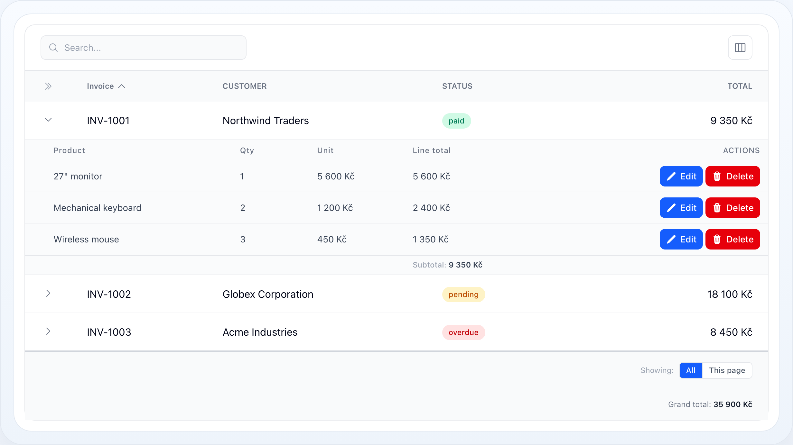
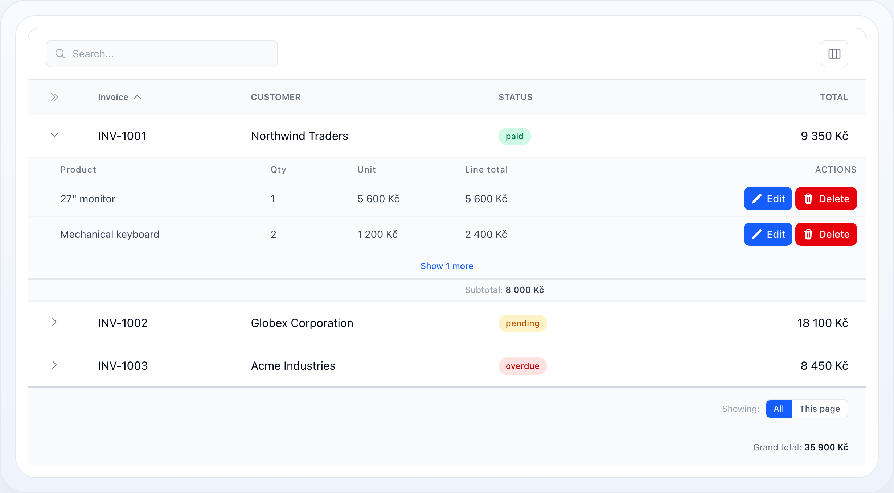
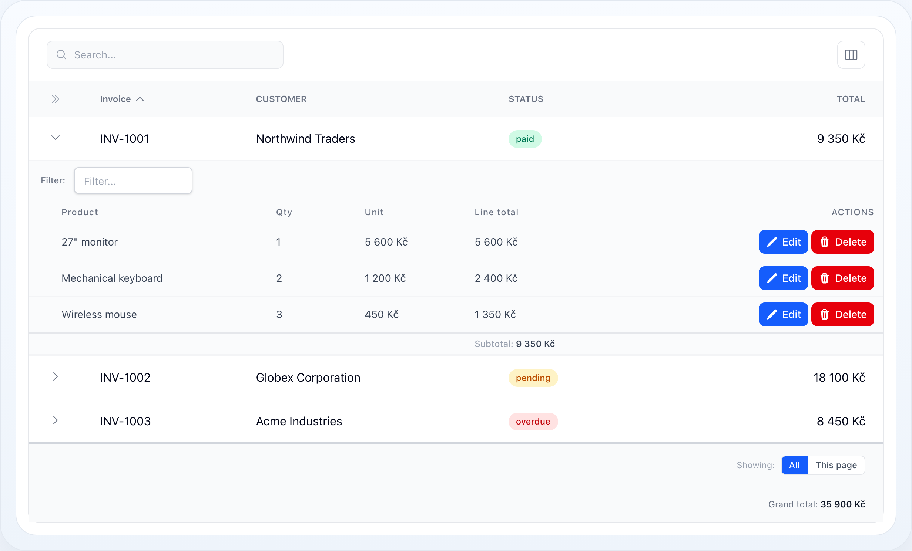

Tabulka
Podřádky
Podřádky vykreslují související dětské záznamy v rozbalitelném panelu pod každým rodičovským řádkem. Použijte je, když uživatelé potřebují proniknout do detailu — položky faktury, zásilky objednávky, úkoly projektu — bez opuštění tabulky.


Omezené dětské řádky s prvkem „zobrazit více" per rodič.

Interaktivní lišta filtrů per dítě nad tabulkou podřádků.

Každý dětský záznam vykreslený inline jako běžný řádek tabulky.
Na této stránce
- Základní nastavení
- Kdy je použít
- Když děti může mít jen část záznamů
- Skrytí řádků, které prostě žádné nemají
- Rozbalení a sbalení
- Řaditelné dětské řádky
- Limit a „Zobrazit více"
- Filtrování dětského dotazu
- Filtrování podle hodnot podřádků z filtrů tabulky
- Sestavení diagramu
- Řádkové akce
- Mezisoučty per rodič
- Začít plně rozbalené
- Detail-řádkový režim (bez relace)
- Vlastní pohled
- Výkon: Eager loading
- Reference voleb
- Související dokumentace
Podřádky vykreslují související dětské záznamy v rozbalitelném panelu pod každým rodičovským řádkem. Použijte je, když uživatelé potřebují proniknout do detailu — položky faktury, zásilky objednávky, úkoly projektu — bez opuštění tabulky.
┌───┬────────────┬──────────────┬───────────┬──────────────┐│ ▾ │ INV-1001 │ Northwind │ paid │ 9 350 Kč │ ← rodičovský řádek│ └──────────────────────────────────────────────────────┐│ Product Qty Unit Line total Actions│ ← dětská tabulka│ 27" monitor 1 5 600 Kč 5 600 Kč [✎][🗑] ││ Keyboard 2 1 200 Kč 2 400 Kč [✎][🗑] ││ Wireless mouse 3 450 Kč 1 350 Kč [✎][🗑] ││ Subtotal: 9 350 Kč │ ← součet per rodič│ └──────────────────────────────────────────────────────┘│ ▸ │ INV-1002 │ Globex │ pending │ 18 100 Kč │└───┴────────────┴──────────────┴───────────┴──────────────┘Základní nastavení
use NyonCode\WireTable\Columns\TextColumn;use NyonCode\WireTable\Table; public function table(Table $table): Table{ return $table ->model(Invoice::class) ->columns([ TextColumn::make('number')->label('Invoice')->sortable(), TextColumn::make('customer')->label('Customer'), TextColumn::make('total')->money(), ]) ->subRows('items') // metoda Eloquent relace ->subRowColumns([ // sloupce pro dětskou tabulku TextColumn::make('product')->label('Product'), TextColumn::make('quantity')->numeric()->label('Qty'), TextColumn::make('unit_price')->money()->label('Unit'), ]);}subRows('items') očekává metodu relace (items()) na rodičovském modelu.
Dětské sloupce jsou nezávislé na rodičovských — mohou to být úplně jiná pole.
Kdy je použít
Podřádky použijte, když:
- rodičovský záznam vlastní malou sadu dětských záznamů,
- uživatelé potřebují rychlý drill-down bez změn routy,
- dětská data sdílejí stejný rozhodovací kontext jako rodičovský řádek.
Vyhněte se jim, když je dětská sada dost velká, aby si zasloužila vlastní tabulku s vlastními filtry a stránkováním — podřádky jsou detailní prostředek, ne druhý grid.
Když děti může mít jen část záznamů
subRows() je přepínač na úrovni tabulky, takže ve výchozím stavu dostane
rozbalovací chevron každý řádek. V tabulce míchající různé druhy záznamů tak
slibuje děti i řádku, který je mít nikdy nemůže. subRowsVisible() to rozhodne
per záznam:
->subRows('items')->subRowsVisible(fn (Order $record) => $record->isPiecework());Záznamy, které podmínka odmítne, přijdou o chevron, o dětský panel i o svůj podíl na eager loadu. Buňka s chevronem se pořád vykreslí — prázdná — protože její vypuštění by posunulo všechny ostatní sloupce toho řádku.
Není to totéž jako „zrovna nemá děti": záznam, který děti mít může, ale právě
žádné nemá, se dál rozbalí na hlášku no_sub_rows. Podmínku použijte pro
záznamy, které je mít strukturálně nemohou.
Výsledek se memoizuje per záznam na dobu requestu, takže callback smí sáhnout do databáze — lepší je ale číst něco, co už na záznamu je.
Skrytí řádků, které prostě žádné nemají
Na nejčastější podmínku — „tenhle záznam právě teď nemá děti" — použijte
subRowsHideWhenEmpty() místo vlastní closure:
->subRows('items')->subRowsHideWhenEmpty();Ručně napsané to stojí jeden COUNT na řádek. Přepínač místo toho nechá dotaz
tabulky nést omezený count relace podřádků, takže kontrola per řádek je čtení
atributu — u vykreslené stránky žádný dotaz navíc. Záznam předaný tabulce přímo
(ne načtený jejím dotazem) spadne zpět na jeden EXISTS.
Count je omezený přesně tak jako panel — subRowQuery() a případný
Filter::subRows() — takže rodič, jehož děti filtr
celé odstraní, přijde o rozbalovátko místo aby se otevřel na hlášku o prázdném
stavu. Interaktivní lišta filtrů podřádků (subRowsFilterable()) se do něj
záměrně nepromítá: její hodnoty se mění per rodič, jak uživatel píše, a
rozbalovátko by mizelo a objevovalo se pod kurzorem.
Obě podmínky se skládají a ta levnější běží první — záznam, který už
subRowsVisible() odmítl, se nikdy nepočítá:
->subRowsVisible(fn (Order $record) => $record->isPiecework())->subRowsHideWhenEmpty();Rozbalení a sbalení
->subRowsExpandable() // uživatel může přepnout (výchozí true)->subRowsDefaultExpanded() // začít rozbalené->subRowsExpandable(false) // vždy otevřené, bez přepínače->subRowsToggleLabel('Show items') // popisek sloupce přepínačeRozbalení je jeden stav, ne dva: výchozí stav (baseline) říká, jestli řádky
začínají otevřené, a Livewire stav drží jen řádky, které se od něj liší.
subRowsDefaultExpanded() nastaví baseline; uživatel s ním pohne master
chevronem v hlavičce sloupce s chevrony — ikonou přímo nad řádkovými chevrony:
┌───┬────────────┬──────────────┐│ » │ FAKTURA │ CELKEM │ » master chevron: otevřít / zavřít vše├───┼────────────┼──────────────┤│ › │ INV-1001 │ 9 350 Kč │ › chevron řádku│ › │ INV-1002 │ 18 100 Kč │└───┴────────────┴──────────────┘Tři cesty k němu, jeden stav za nimi:
| Ovládání | Kde |
|---|---|
| Master chevron | Hlavička sloupce s chevrony |
| ⌥/Alt-klik na chevron řádku | Kterýkoli řádek — zkratka ze spreadsheetů |
| Rozbalit u všech řádků | View menu (tlačítko ⊞); na mobilu jediné hromadné ovládání, protože rozložení karet nemá hlavičku |
Protože baseline je režim, ne seznam klíčů, platí i pro řádky na stránkách, které
uživatel ještě neotevřel. Se zapnutým rememberColumns() se volba ukládá per
uživatel spolu s rozložením sloupců.
Řaditelné dětské řádky
Nechte uživatele řadit dětskou tabulku kliknutím na hlavičky sloupců, s volitelným výchozím řazením aplikovaným před jakoukoli interakcí:
->subRowsSortable(default: 'line_total', direction: 'desc')Product ↕ Qty ↕ Unit ↕ Line total ▼ ← ▼ aktivní řazení, ↕ řaditelné─────────────────────────────────────────27" monitor 1 5 600 Kč 5 600 KčKeyboard 2 1 200 Kč 2 400 KčWireless ... 3 450 Kč 1 350 KčŘadit lze jen sloupce přítomné v subRowColumns() — libovolné názvy sloupců jsou
odmítnuty, takže je řazení bezpečné řídit z requestu. Kliknutí na aktivní sloupec
otočí směr; kliknutí na jiný ho seřadí vzestupně. Aktivní řazení je sdílené napříč
všemi rozbalenými rodiči.
Limit a „Zobrazit více"
->subRowsLimit(5)Když je nastaven limit a existuje více dětí, na konci dětské tabulky se vykreslí tlačítko „Zobrazit N dalších". Kliknutí odhalí celou sadu pro daného rodiče (sledováno per rodič ve stavu), zatímco počet zůstává přesný.
Eager load načte jen limit řádků na rodiče (nativní per-parent eager-load limit)
plus jeden count dotaz pro přesné součty — celé dětské sady se nikdy nenačítají do
paměti, dokud není rodič rozbalen přes „Zobrazit více":
Product Qty Line total───────────────────────────────Keyboard 2 2 400 KčWireless mouse 3 1 350 Kč Show 1 more ← objeví se, protože limit (2) < total (3)Filtrování dětského dotazu
Tvarujte podkladový dotaz relace pomocí subRowQuery():
use Illuminate\Database\Eloquent\Builder; ->subRowQuery(fn (Builder $query) => $query ->where('active', true) ->orderBy('sort_order'))Zapněte per-dítě interaktivní filtry pomocí subRowsFilterable(). Lišta filtrů
se vykreslí nad dětskou tabulkou pro každý filtrovatelný sloupec podřádku a zúží
děti — rodičovské řádky zůstanou nedotčené:
->subRowsFilterable()Filter: [ Product… ] [ price from – to ] ✕ Reset───────────────────────────────────────────────────────Product Qty Line totalKeyboard 2 2 400 Kč ← jen řádky odpovídající filtruFiltrování podle hodnot podřádků z filtrů tabulky
Označte jakýkoli filtr hlavní tabulky pomocí subRows() a míří na dětské záznamy
místo rodičovských sloupců — např. filtr Měsíc/Rok nad datem dětí. Název sloupce
filtru (zde billed_at) odkazuje na dětský model:
use NyonCode\WireTable\Filters\DateFilter; ->filters([ DateFilter::make('billed_at')->month()->subRows(),])Jeden filtr omezí vše konzistentně:
- rodiče se zmenší na ty s aspoň jedním odpovídajícím dítětem,
- rozbalené panely ukážou jen odpovídající děti,
- mezisoučty per rodič, počty „zobrazit více", rollup sloupce (
->sums(),->counts(), …) a jejich celkové součty v patičce agregují jen odpovídající děti.
Měsíc: [ 2026-06 ▾ ]┌───┬────────────┬──────────────┐│ ▾ │ INV-1001 │ 5 000 Kč │ ← rollup počítá jen červnové položky│ └── June item A … June item B ──┘│ ▾ │ INV-1003 │ 5 000 Kč │ ← INV-1002 (jen květen) zmizela└───┴────────────┴──────────────┘│ Celkem: │ 10 000 Kč │ ← patička sčítá filtrované podřádkySestavení diagramu
Žádné extra zapojení není potřeba — agregáty stačí deklarovat a filtr je zúží automaticky. Součty lze získat dvěma způsoby podle toho, zda má být částka per faktura viditelným rodičovským sloupcem:
Částka jen v podřádcích. Dejte sloupci podřádku mezisoučet per rodič
(scope: 'subRows') a souhrn ve výchozím rozsahu pro celkový součet — ten se
vykreslí v hlavní patičce, spočtený v SQL nad přesně těmi dětmi, které filtr
povoluje (viz
Celkové součty ze sloupců podřádků):
$table ->subRows('items') ->subRowColumns([ TextColumn::make('product'), TextColumn::make('line_total') ->suffix(' Kč') ->summaryDecimals(0) ->summarizeSum('Subtotal', scope: 'subRows') // patička panelu per faktura ->summarizeSum('Celkem'), // hlavní patička, filtrované děti ]) ->filters([ DateFilter::make('billed_at')->month()->subRows(), ]);Částka jako rodičovský sloupec. Použijte rollup sloupec
nad stejnou relací jako subRows() — shoda relace je to, co filtru umožňuje
ji omezit. Buňka pak ukazuje součet odpovídajících položek každé faktury (sloupec
5 000 Kč v diagramu) a její souhrn je celkový součet v patičce. Uložený rodičovský
atribut jako $invoice->total by na filtr nereagoval — přesně to rollup nahrazuje:
$table ->columns([ TextColumn::make('number')->label('Invoice'), TextColumn::make('items_total') ->label('Total') ->sums('items', 'line_total') // stejná relace jako ->subRows('items') ->suffix(' Kč') ->summaryDecimals(0) ->summarizeSum('Celkem'), ]) ->subRows('items') ->filters([ DateFilter::make('billed_at')->month()->subRows(), ]);Omezení rollupu je klíčované názvem relace: rollup nad jinou relací (řekněme
->counts('payments')) zůstane items-scopnutým filtrem nedotčen a dál agreguje
všechny své děti.
Viz Filtry — Filtrování podle hodnot podřádků.
Řádkové akce
Vykreslete per-dítě akce v koncové buňce akcí. Každá akce se vykreslí proti dětskému záznamu, přesně jako akce hlavní tabulky proti rodiči:
use NyonCode\WireCore\Actions\Action;use NyonCode\WireCore\Actions\DeleteAction; ->subRowActions([ Action::make('edit')->label('Edit')->icon('pencil')->color('primary'), DeleteAction::make(),])Product Qty Line total Actions─────────────────────────────────────────────27" monitor 1 5 600 Kč [✎ Edit][🗑 Delete]Keyboard 2 2 400 Kč [✎ Edit][🗑 Delete]Mezisoučty per rodič
Dejte sloupci podřádku souhrn v rozsahu subRows a dětská tabulka získá patičku
s tou agregací pro děti rodiče:
->subRowColumns([ TextColumn::make('product')->label('Product'), TextColumn::make('quantity')->numeric()->summarizeSum(scope: 'subRows'), TextColumn::make('line_total') ->numeric(0) ->suffix(' Kč') ->summaryDecimals(0) ->summarizeSum('Subtotal', scope: 'subRows'),])Product Qty Line total───────────────────────────────27" monitor 1 5 600 KčKeyboard 2 2 400 KčWireless mouse 3 1 350 KčSubtotal: 6 9 350 Kč ← patička per rodičPlatí zde všechny typy agregací a formátování čísel ze stránky Souhrny.
Pro součet napříč všemi rodiči v hlavní patičce přidejte druhý souhrn ve
výchozím rozsahu na stejný sloupec podřádku — ->summarizeSum('Celkem') — nebo
dejte rodičovskému rollup sloupci vlastní souhrn.
Viz Celkové součty ze sloupců podřádků
a Celkové součty přes všechny děti.
Začít plně rozbalené
Otevřít podřádky všech rodičů hned od prvního vykreslení — hodí se na kontrolu a procházení, kdy chcete vidět všechen detail pohromadě:
->subRowsDefaultExpanded()┌───┬────────────┬──────────────┐│ ⌄ │ INV-1001 │ 9 350 Kč │ rozbalené jsou všechny faktury,│ └── Monitor … Klávesnice ───┘ ne jen ta, na kterou uživatel klikl│ ⌄ │ INV-1002 │ 18 100 Kč ││ └── Stůl … Židle … ─────────┘└───┴────────────┴──────────────┘Je to jen výchozí bod — master chevron a view menu tímto výchozím stavem za běhu pohnou na obě strany.
flattenSubRows()je zastaralý aliassubRowsDefaultExpanded(). Navzdory názvu nikdy nevykreslil děti jako ploché řádky; byl to druhý příznak se stejným viditelným efektem a existence obou znamenala, že „Sbalit vše“ nedokázalo zavřít to, co flatten režim držel otevřené.toggleFlattenMode()dál funguje a volátoggleAllRowExpansion().
Detail-řádkový režim (bez relace)
Vynechte subRows() úplně a poskytněte jen dětský pohled: rozbalený panel pak
vykreslí samotný rodičovský záznam — ideální pro detailní kartu. Podřádky se
aktivují, jakmile je nastaven subRowView() (nebo subRowColumns()), i bez relace:
->subRowView('components.users.detail') // žádné volání subRows() → detail-řádkový režim┌───┬────────────┬──────────┐│ ▾ │ Alice │ Active ││ └──────────────────────────────────┐│ Email: alice@example.com │ ← váš vlastní Blade│ Phone: +420 777 123 456 ││ └──────────────────────────────────┘└───┴────────────┴──────────┘Vlastní pohled
Nahraďte výchozí renderer dětí úplně, když data nejsou přirozeně tabulková:
->subRowView('components.orders.sub-rows')Pohled dostane $table, $component, $record (rodič), $subRows
(kolekce dětí) a layoutové proměnné.
Výkon: Eager loading
Podřádky se načítají pro celou stránku v jednom dotazu místo jednoho dotazu na rozbaleného rodiče:
- Vše rozbalené — děti každého rodiče se načtou najednou.
- Jinak — načtou se jen aktuálně rozbalení rodiče.
To odstraňuje N+1, které by jinak rostlo s počtem otevřených řádků. Čtení dětí rodiče (a jeho počtu pro mezisoučet) pak nestojí žádné extra dotazy. Eager loading se automaticky přeskočí, když jsou aktivní interaktivní filtry podřádků, protože filtrování per rodič spadne zpět na bezpečný per-parent dotaz.
Reference voleb
| Metoda | Účel |
|---|---|
subRows(string $relation) |
Zapnout podřádky z relace (vynechejte + nastavte subRowView/subRowColumns pro detail-řádkový režim) |
subRowsVisible(Closure|bool) |
Omezit podřádky na záznamy, které děti mít mohou |
subRowsHideWhenEmpty(bool) |
Sebrat rozbalovátko záznamům bez dětí (count je v dotazu tabulky) |
subRowColumns(array $columns) |
Sloupce pro dětskou tabulku |
subRowQuery(Closure $cb) |
Tvarovat dotaz dětské relace |
subRowsSortable(bool, ?string $default, string $direction) |
Řazení klikem na hlavičky + výchozí řazení |
subRowActions(array $actions) |
Řádkové akce per dítě |
subRowsLimit(?int) |
Omezit děti, zapnout „Zobrazit N dalších" |
subRowsFilterable(bool) |
Per-dítě interaktivní lišta filtrů |
subRowsExpandable(bool) |
Povolit přepínač rozbalit/sbalit |
subRowsDefaultExpanded(bool) |
Začít rozbalené |
subRowsToggleLabel(?string) |
Popisek sloupce přepínače |
flattenSubRows(bool) |
Zastaralý alias subRowsDefaultExpanded() |
subRowView(string) |
Vlastní renderer dětí |
Související dokumentace
- Souhrny — typy agregací, rozsahy, formátování, rollupy
- Přehled tabulek
- Sloupce
- Akce